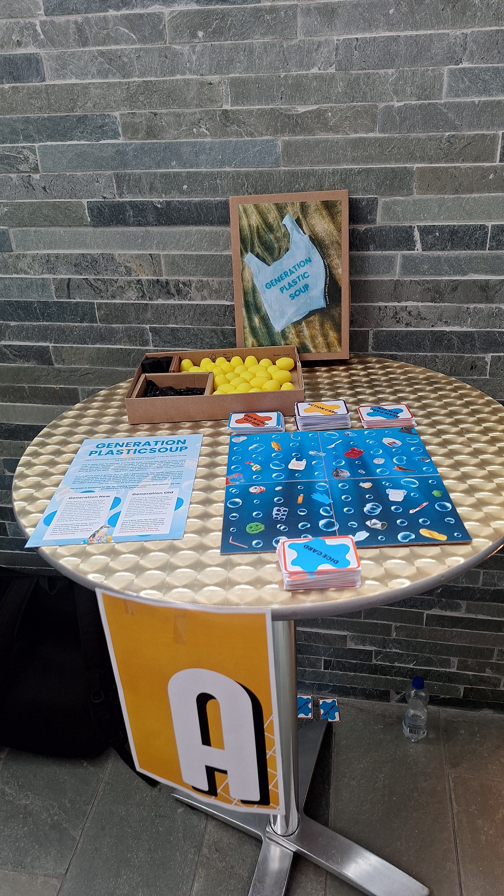
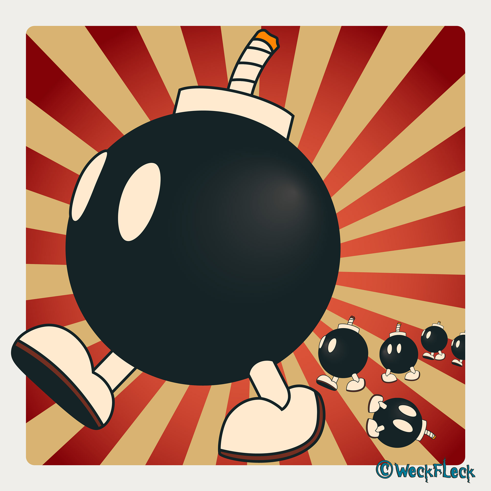
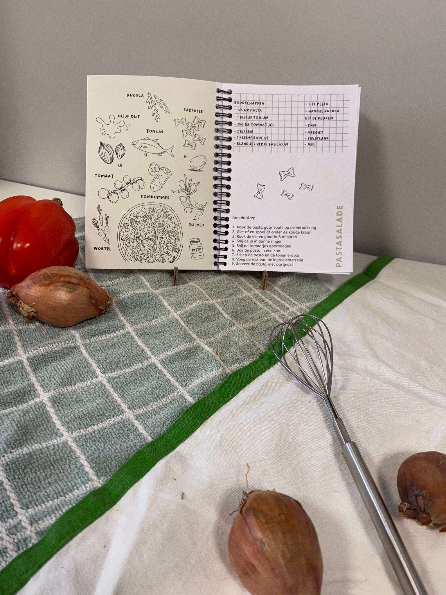
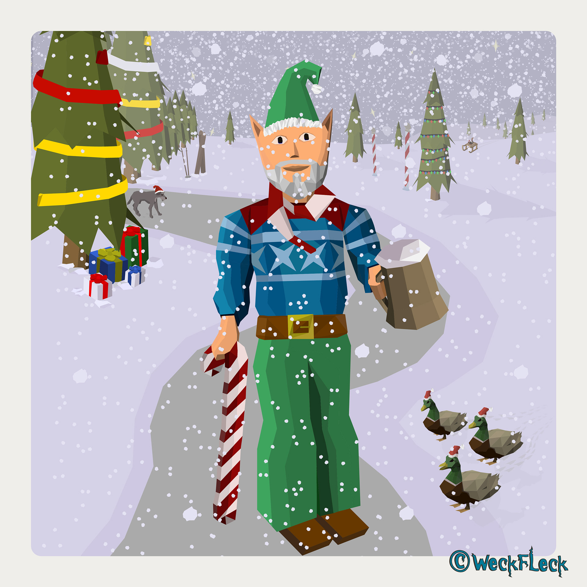
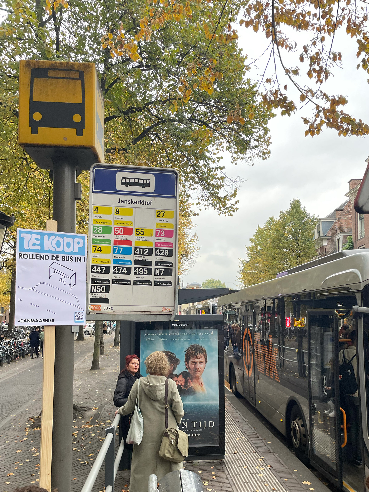

// IN PROGRESS — FURNITURE DESIGN
DIY Royal System Wall Unit
Custom mid-century modern modular wall unit and floating bench engineered with concealed French cleats.
[ Spatial Experience Designer | Physical Craftsman | AI Lab Operator ]
Bridging the gap between analog woodworking, tactile craftsmanship, and immersive digital experiences.
Custom mid-century modern modular wall unit and floating bench engineered with concealed French cleats.
Self-hosted Ubuntu server orchestrating multi-LLM routing via OmniRoute, Home Assistant, and autonomous coding bots.
Prototyping and developing interactive virtual reality learning environments and spatial user interfaces.

Strategic board & hybrid game created during the EPIC-WE Game Jam addressing ocean pollution across generations.

Hand-pulled screen prints, custom apparel graphics, and tactile ink experiments on fabric and paper.

Interactive spatial installation designed to spark spontaneous collaboration and playful human connection.

Custom-built physical arcade claw machine powered by Arduino microcontrollers, stepper motors, and custom circuitry.

Nostalgic analog photography campaign and bold typographic poster series celebrating classic Kodak film heritage.

Fast-paced physical-digital arcade game combining custom hardware controls with retro pixel-art gameplay.

Atmospheric narrative design and playful visual storytelling project built around an interactive picnic experience.

Bespoke illustrated holiday poster and event artwork created for an international Old School RuneScape gaming clan.

Theatrical holiday installation and spatial storytelling piece pulling visitors straight into an absurd festive scene.

Visual campaign, spatial branding, and interactive wayfinding for Utrecht's flagship creative makers collective.

Human-centered UX research and visual communication toolkit improving student guidance at Hogeschool Utrecht.

Curated collection of Communication & Multimedia Design prototypes, visual experiments, and interactive media.

Welcome to my digital chaos. I'm Casper (Delft, '97), a CMD student at Hogeschool Utrecht with a background that started in the physical world of woodworking, electricity, and horticulture.
I combine a practical maker-mindset with digital design. Whether it's crafting custom furniture inspired by Poul Cadovius, building smart home integrations, or operating my own Linux AI Homelab, I love crafting just as much behind my laptop as I do in the workshop.
Beyond design, I run gaming communities (150+ members) and explore hands-on skills like screen-printing, goldsmithing, and set decoration. My mission? To create immersive experiences that pull people out of reality.
Behind my design work runs a dedicated Linux homelab in Delft. Instead of relying on black-box cloud tools, I wired up my own self-hosted infrastructure from scratch—turning an Ubuntu machine into an always-on automation and AI sandbox.
From network-wide AdGuard DNS sinkholing and smart climate/ventilation relays in Home Assistant to an autonomous multi-agent Discord coding pipeline powered by OmniRoute, this lab is where I test how far local AI and smart spaces can be pushed.
Send a data packet to my terminal. I usually respond within 48 hours.